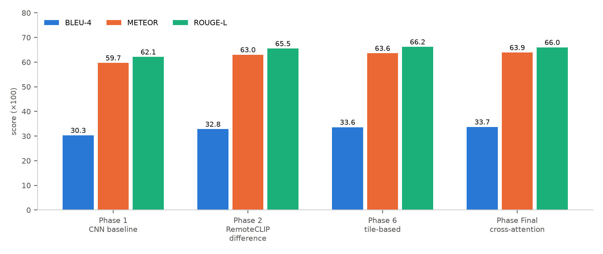
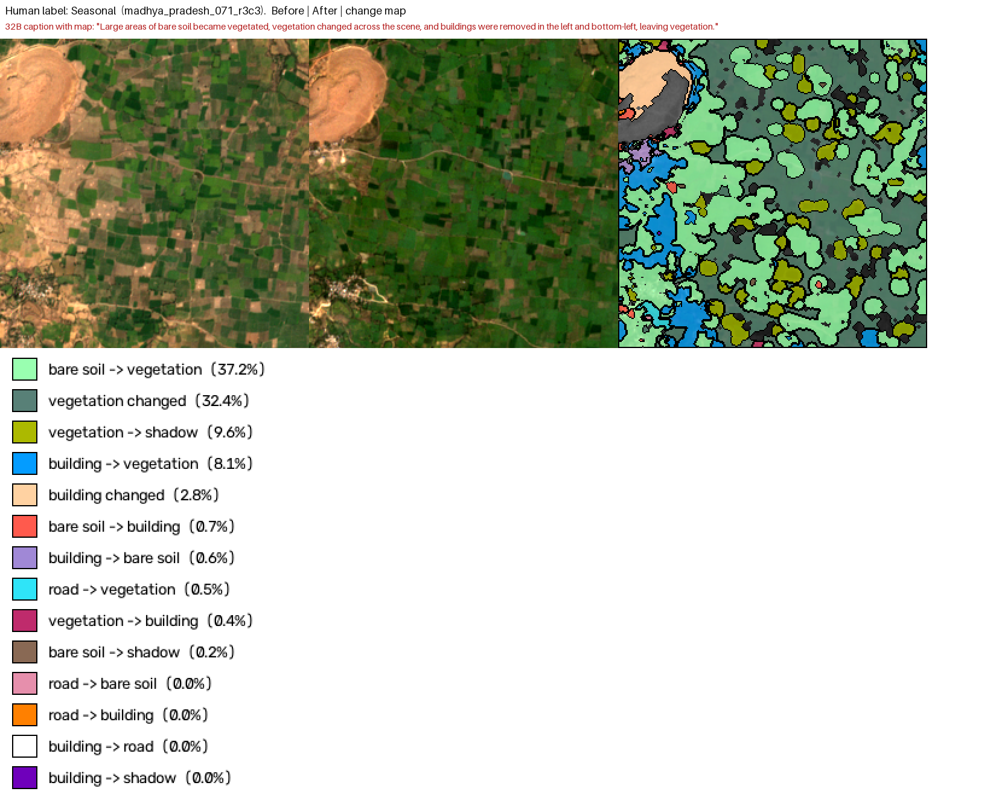

Figure 2. LEVIR-CC test scores before and after sequential fine-tuning on SECOND-CC.
Figure 2. LEVIR-CC test scores before and after sequential fine-tuning on SECOND-CC.Project overview, experiment timeline and findings, July – October 2026
[Author names] · [Affiliation] · October 2026
This report consolidates the full project on remote sensing image change captioning (RSICC) for Indian imagery. It covers three parts:
We conclude that neither transfer from LEVIR-CC nor automatic labelling with current vision-language models yields reliable change captions for Indian 10 m imagery, and that scaling either approach would produce a dataset of unacceptably poor quality.
Remote sensing image change captioning describes, in natural language, what changed between two satellite images of the same place. Public RSICC datasets such as LEVIR-CC use sub-metre imagery of a few foreign regions. India's freely available imagery is medium-resolution (Sentinel-2, 10 m), and its landscapes are dominated by smallholder farmland, monsoon-driven seasonal cycles, haze and dense organic settlements.
The project aimed at a change captioning system for Indian imagery. It moved through three parts, each motivated by the failure of the previous one:
| Part | Question | Outcome |
|---|---|---|
| A | Can a model trained on LEVIR-CC be improved and adapted to new data? | Improves on LEVIR-CC, but does not transfer |
| B | Can existing vision-language captioners caption Indian imagery directly? | No: empty, garbled or "nothing changed" output |
| C | Can we build an Indian dataset and label it automatically with vision-language models? | Dataset built; automatic labels too inaccurate to use |
| Date (2026) | Part | Work | Result |
|---|---|---|---|
| 2 Jul | A | Phase 1: modular pipeline and CNN baseline on LEVIR-CC | BLEU-4 30.3, ROUGE-L 62.1 |
| 7–9 Jul | A | Phase 2: frozen RemoteCLIP encoder with difference fusion | BLEU-4 32.8; largest single gain |
| 9–10 Jul | A | Final model: RemoteCLIP cross-attention + contrastive alignment | BLEU-4 33.7 |
| 12–28 Jul | A | Phase 6: hierarchical tile-based model | BLEU-4 33.6 |
| Jul | A | Sequential fine-tuning on SECOND-CC (Phase 6 and Final models) | Catastrophic forgetting: LEVIR-CC BLEU-4 fell to 12–15 |
| 30 Jul – 1 Aug | A | Phases 7–8: tile-difference variants and hyperparameter changes | Marked failed; degraded |
| 2–20 Aug | A | CodeAug / Phase 8: RemoteCLIP + Q-Former / bridge + Qwen language-model decoder | Stage-2 loss diverged to NaN; no evaluation completed |
| 9–10 Sep | B | Pilot Indian Sentinel-2 collection; TeoChat and Qwen2.5-VL captioning | 1,072 pairs kept; captions unusable |
| mid-Sep | C | Prototype: change heatmaps and a two-stage VLM captioner on a few sites | Captioner dismissed a real localized change; selection problems found |
| 27 Sep | C | All-India downloader, 1,200-site registry, pilot | Resumable downloader; quality checks added |
| 28 Sep | C | Haze screen trial on the GPU cluster | 4-bit 8B model chosen for speed |
| 28–29 Sep | C | Full dataset: download, patching, screening | 15,610 accepted patch pairs |
| 29 Sep | C | Diagnosis of failed captions; perception test of four models | Seasonal change mistaken for land-use change |
| 30 Sep | C | Change gate (pixel and CNN features) and two-model triage trial | Strict triage found only 7 of 15 changes |
| 1 Oct | C | Prompting with and without assistance; teammate's change-map method | Boxes halve detection; forcing prompts and maps invent change |
| 1–2 Oct | C | 1,000-pair validation; blind human review of 535 pairs | Best rule correct on at most about half of its change calls |
3.1 Pipeline. All models shared one codebase, so their results are comparable:
3.2 Architectures and results (LEVIR-CC test set):
| Model | Description | BLEU-4 | METEOR | ROUGE-L |
|---|---|---|---|---|
| Phase 1 | Two-stream CNN encoder + Transformer decoder | 30.3 | 59.7 | 62.1 |
| Phase 2 | Frozen RemoteCLIP ViT-B/32, difference fusion | 32.8 | 63.0 | 65.5 |
| Phase 6 | Tile-based RemoteCLIP with tile fusion | 33.6 | 63.6 | 66.2 |
| Final | RemoteCLIP cross-attention + contrastive alignment | 33.7 | 63.9 | 66.0 |

Figure 1. LEVIR-CC test scores per architecture.A remote-sensing-pretrained encoder gave the largest single gain, and further complexity added little.
3.3 Cross-dataset extension. Sequential fine-tuning on SECOND-CC erased most of the LEVIR-CC performance (Figure 2), while SECOND-CC scores stayed low (BLEU-4 12–13). Language-model decoders (Qwen2-VL-2B, Qwen2-0.5B) were implemented, but training diverged to NaN in half precision, and no evaluation was completed.
Figure 2. LEVIR-CC test scores before and after sequential fine-tuning on SECOND-CC.
A pilot Sentinel-2 collection over hand-picked Indian areas kept 1,072 of 2,126 tiles. Two pretrained captioners were run on a 30-pair sample:
 Figure 3. One Indian pair with both captioners' answers. Neither describes the specific change visible on the right.
Figure 3. One Indian pair with both captioners' answers. Neither describes the specific change visible on the right.
5.1 Dataset. - Sites: 1,200 sites spread evenly over all 36 states and union territories (Figure 4). - Imagery: Sentinel-2 Collection-1 true colour at 10 m, with before (2019–20) and after (2025–26) images taken in matching dry-season windows. - Quality control: block-level cloud, snow and water limits, haze and whiteout checks, alignment checks, patch-level screening, and a haze screen run on the GPU cluster. - Result: 27,888 patch pairs, of which 15,610 were accepted.
 Figure 4. Site coverage across India.
Figure 4. Site coverage across India.
5.2 Reference labels. A web-based review tool shows the before and after images with a blink view. A human annotator labelled 535 pairs blind, choosing change, seasonal, no change or can't tell. The pairs were those where the automatic labels disagreed, plus a random sample where they agreed.
5.3 Prompting experiments. - Without assistance: constrained, neutral and free-form prompts all shifted the balance between missed and false changes, but none removed the confusion between seasonal and lasting change. - With assistance: neutral region boxes, whether from pixel differences or CNN features, roughly halved detection (Figure 5). A forcing prompt invented change on 12 of 15 identical-image pairs. A rule-based change map marked a median 82% of each image as changed and led the model to report change on every pair (Figure 6).
 Figure 5. A human-confirmed change, found with the plain prompt but missed once region boxes are added.
Figure 5. A human-confirmed change, found with the plain prompt but missed once region boxes are added.

Figure 6. Rule-based change map on a pair the human labelled seasonal.5.4 1,000-pair validation. The free-form question was put to Qwen3-VL-32B and Qwen3-VL-235B on 1,002 pairs (API cost USD 1.00).
| Decision rule | Human-labelled pairs (n = 495): found / precision | All pairs (n = 962): found / precision |
|---|---|---|
| 32B | 89% / 11% | 96% / 26% |
| 235B | 45% / 17% | 79% / 48% |
| 32B and 235B agree | 42% / 18% | 78% / 51% |
 Figure 7. Changes found and precision of "change" calls for each rule, against the 90% precision needed for automatic labelling.
Figure 7. Changes found and precision of "change" calls for each rule, against the 90% precision needed for automatic labelling.
 Figure 8. Validation examples with the human label as ground truth: (a) correct, (b) false alarm, (c) missed change.
Figure 8. Validation examples with the human label as ground truth: (a) correct, (b) false alarm, (c) missed change.
Real change appears in only about one pair in seven, so even a low false-change rate produces as many false "change" labels as true ones. Automatic labelling was therefore rejected as a source for the dataset.
Over four months we built a reproducible RSICC pipeline on LEVIR-CC and an India-wide, quality-screened Sentinel-2 dataset of 15,610 patch pairs. We tested three routes to Indian change captioning:
All three failed for the same underlying reason: no available model reliably tells lasting land-use change from seasonal variation in medium-resolution Indian imagery. Scaling any of these pipelines would produce a large dataset of poor quality. Reliable change labels for this setting still require human annotation, and the dataset, tooling and evaluation protocol built here provide the base for that work.
Detailed reports: Phase 1 (LEVIR-CC and adaptation) and the Indian dataset report, provided separately.